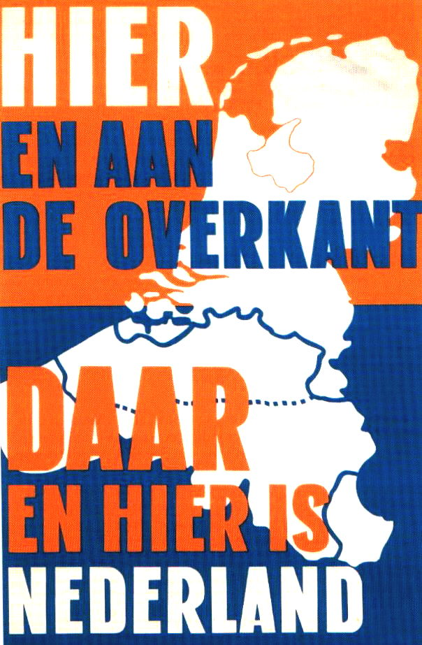

> nieuwsbrief
> 25e jg. - 4e trimester
2008
| Bijdragen over: |
Tip |
Zannekin-Ontmoetingsdag
te Wezel
Onze
traditionele Ontmoetingsdag
staat
gepland voor zaterdag 11 oktober. De dag zal doorgaan te Wezel
in het
Rijnland.
Programma
10.30-11.00 uur: samenkomst, verwelkoming en toelichting bij het dagprogramma in het Preussen Museum, An der Zitadelle 14-20 te Wezel (zie plattegrond), alwaar koffie en gebak.
11.15 uur: referaat door dr. Veit Veltzke, Museumsdirektor, over De vestingstad ten tijde van de Staten-Generaal en de Pruisen.
12.00 uur: bezoek aan het Preussen Museum.
12.30 uur: gezamenlijke lunch.
14.00 uur: wandeling langs de vesting van Wezel richting de binnenstad. 14.30 uur: bezoek aan de Willibrorduskerk. Toelichtingen daarbij door de hr. Walter Stempel over De geschiedenis van de kerk en met name Wezel ten tijde van de reformatie.
15.00 uur: lezing door
Marten Heida over Enkele achtergrondkantekening bij het
Convent van Wezel in 1568.
15.20 uur: rondwandeling door de stad, richting Museum.
16.00 uur: afsluit in het museum met koffie en gebak.
NB Tijdens de wandeling
zullen wij proberen een bezoek aan
het Raadhuis te brengen met de befaamde geuzenbekers. Hoe en wanneer
wordt
tijdens de wandeling ingevuld, vanwege praktische problemen.
Deelnamebijdrage: 30 all in (lunch, vieruurtje, gidsing, toegangen ) per persoon. Aanmelding via overboeking van de bijdrage op een van de Zannekin-rekeningen tot uiterlijk 6 oktober, met vermelding Wezel en (e-post-)aanmeding aan het secretariaatsadres: Paddevijverstraat 2, B 8900 Ieper e-adres: maurits.cailliau@skynet.be
Bus:
vanuit
Adam wordt er, in samenwerking met Ons
Adam, een bus ingelegd. Info meerkost hieromtrent:
Jean-Marie
Gantois-herdenking te Waten
In de
voorbije meimaand was het precies veertig jaar geleden dat de
Frans-Vlaamse
voorman, priester Jean-Marie Gantois die mede aan de basis lag van
het
ontstaan van de Vereniging/Stichting Zannekin - overleed te
Waten. Redenen
genoeg dus om een herdenkingsplechtigheid aan zijn graf te houden. Deze
ging
door op zaterdag 12 juli jongstleden. Alhoewel eerst laattijdig
aangekondigd,
konden de inrichters rekenen op een behoorlijke opkomst, waaronder
hoopvol
teken een opvallend aantal jongeren. Na de toespraak en de
kransneerlegging
werd het geheel afgesloten met de Vlaamse
Leeuw en de zesde strofe van het Wilhelmus.
Een vleugje
Nederlandse geschiedenis in
Bulgarije - bis
De bijdrage van
Dorothea van
Wallene in onze vorige Nieuwsbrief over
een vleugje Nederlandse geschiedenis in Bulgarije leidde tot een
vervolg dat
van het verleden naar het heden reikt. U leest er over in Nederlands
in Gabrovo, verderop in deze Nieuwsbrief.
In het
spoor van Lothar
Onze meerdaagse reis onderbovenstaand motto voldeed inhoudelijk volledig aan de de geschetste verwachtingen. Nogal wat territoria van het voormalige Middenrijk dat ontstond na het overlijden van Karel de Grote, kwamen naderhand in Franse (en Duitse) handen terecht. We mochten hun aan onze geschiedenis zo verwante lot doorheen de eeuwen herontdekken.
Manifest
voor de Lage Landen

Het Manifest voor de Lage Landen, is een initiatief uitgaande van de voormalige Heel-Nederlandse jeugdbeweging. Aan de basis van dit initiatief ligt de bekommernis omtrent het tandend besef omtrent het onontbeerlijk eenheidsbesef der Nederlanden" (Hendrik Fayat). Bedoeling is om in het najaar met dit manifest naar de buitenwereld te treden, met een zo groot mogelijk aantal ondertekenaars. Ook uw handtekening kan daartoe bijdragen. Dit initiatief wordt mede ondersteund door een affichecampagne, waarvan afbeelding hierbij. Deze affiche uitgevoerd in de oranje-blanje-bleu-kleuren op A3 formaat, wordt te koop aangeboden per 10 stuks, voor de prijs van 10 . bestelling via overboeking op rekening 000-1586636-07 (IBAN BE74 0001 5866 3607 BIC BPOTBEB1) t.n.v. Stuurgroep Oud-ADJV, 8900 B. Ieper.
U leest het Manifest
onderaan deze Nieuwsbrief.
Ondertekening ervan kan via adhesiebetuiging aan het opgegeven
adres of via
e-post aan: maurits.cailliau@skynet.be
Foute
benoeming rechtzetting
Willy
Alenus
Dat het kwestieus portret wel degelijk dat van Filips is, heer van Lummen, dat kan niet in twijfel worden getrokken, aangezien een origineel of een authentieke kopie wordt bewaard in het "Arenberg Archief en Cultureel Centrum" in Edingen, waar ik het verleden jaar nog in mijn handen heb gehad.
E. GERAETS, volgens mij
nog altijd
een van de beste biografen van Lumey (als dicataor van Hasselt,
1566-1567), in
zijn Hasselt sous les Princes- Evêques de
Liège, in Société Chorale et Littéraire les Mélophiles de
Hasselt,
deel 24, Hasselt, 1888 en de volgelingenvan Geraets, concluderen als
volgt
m.b.t. het einde van Lumey (1 mei 1578) en de opgang van zijn jongere
broer
Filips: "De titels en de erfenis van de overleden Lumey, die kinderloos
was gestorven, waren in feite al overgegaan op zijn broer Filips. Deze
zei de
geestelijke stand vaarwel (in 1578 was hij kanunnik in Straatsburg),
trouwde
met vrouwe Catharina van Manderscheidt en verwierf alzo de
heerlijkheden (of de
kastelen?) Schleiden en Kerpen, die zij van haar ooms had geërfd.
Filips
overleed op 13 juni 1613. Zijn zoon was heer van Lummen en van
Schleiden, zijn
kleinzoon onderscheidde zich onder maarschalk Turenne (1611-1675), zijn
achterkleinzoon werd luitenant-generaal van (de legers van) de Franse
koning.
Diens zoon werd marquis en zijn dochter huwde de zoon van de hertog van
Arenberg, zo dat de ooit in het verleden opgesplitste erfgoederen van
het
geslacht van der Marck, met name Lummen en Arenberg, weer in één hand
werden
verenigd." Graaf Lamoraal van Egmont
Hoe
belangrijk een eigen website is ondervond de
Historische Vereniging Oud-Beijerland (Zuid-Holland). Via hun website www.hvobl.nl
zocht de historische kring in Zottegem (Oost-Vlaanderen) contact. In
Zottegem,
waar de stichter van de Beijerlanden Lamoraal van Egmond en zijn
echtgenote
Sabina van Beijeren hebben gewoond en zijn begraven, loopt een
initiatief om
een Egmond Museum te stichten.
Op
dinsdag 29 juli 2008 was er een delegatie met onder
andere de Schepen van cultuur van de gemeente Zottegem op bezoek in
Oud-Beijerland. Ze kregen een uitgebreide rondleiding door Piet Jan in
t Veld
en Johan Leeuwenburg van de vereniging in het Oude Raadhuis, de
Nederlandse
Hervormde kerk (met het zogenaamde Gravinnenhuisje met het graf van
Sabina van
Egmond), de toren en de herinneringsplaquette op de hoek
Koninginneweg/Beneden
Oostdijk. De delegatie had voor de Oud-Beijer-landse vereniging een
nieuwtje,
want Zottegem is onlangs in het bezit gekomen van het hart van Lamoraal
van
Egmond. (RK)
Oranjestad
Diest
De jaarlijks Mis voor de oudste zoon van Willem van Oranje, die in Diest zijn laatste rustplaats vond, gaat door op 21 september om 10.30 u. Een koor uit Breda zal de Mis opluisteren, de consul van Nederland en de burge-meester van Breda zullen ook aanwezig zijn. Nadien is er een receptie.
Grensoverschrijdende
heemkundedag
Op 6 september j.l. vond andermaal, dit keer op Erve Kraesgenberg te Losser dit grensoverschrijdend gebeuren plaats dat beurtelings aan de ene en de andere kant van de Nederlands-Duitse grens doorgaat. Thema dit jaar was Landschap en Volksgeloof. Dit initiatief van de Stichting Kunst en Cultuur (Zwolle),de Stichting Gelders Erfgoed (Zutphen) en de Kreishei-matpflege Borken, verdient ook onze lof en waardering.
Leeft de geest nog van
graaf
Boudewijn IX van Vlaanderen? Je zou het zowaar geloven. Met huisoppas
in Bergen
(Mons) profiteer ik van een zwak zonnetje om even de benen te strekken
in het
Waux-Hall-park aan de Porte de Flandre in Bergen. Met een weinig
lectuur bij de
hand, en laat dat dan het Zannekin-Nieuwsbrief
van juli jl. zijn, is na de fikse wandeling een terrasje o zo
deugddoende.
Als co-voorzitter van de Stichting Marcel
de Bisschop: Aalst-Gabrovo vzw laat ik me niet pramen om Een vleugje Nederlandse geschiedenis in
Bulgarije, bijdrage van Dorothea van Wallene, meteen te lezen. Om
de in het
verhaal opgediste Vlaams-Henegouwse graaf Boudewijn IX voor ogen te
halen hoef
ik letterlijk die maar op te slaan. Aan de overzijde van het kruispunt
van de
Avenue Reine Astrid met de Avenue Baudouin VI prijkt het fraaie
ruiterstandbeeld van de Vlaamse graaf Boudewijn IX die als Baudouin VI
gelijktijdig in de twaalfde eeuw ook graaf van Henegouwen was. Van de
elfde tot
de dertiende eeuw zorgde dezelfde gravenfamilie immers voor een unie
tussen
Vlaanderen en Henegouwen. De bronzen Boudewijn houdt in zijn hand het
symbool
van zijn kroning tot keizer van het Byzantijnse rijk. En alsof
Boudewijn IX nog
niet genoeg alom aanwezig is, herinner ik mijn prille kinderjaren in
Kortrijk
waar ik na schooltijd een vieruurtje voorgeschoteld kreeg door mijn
meter die aan
de Graaf Boudewijn IX-laan woonde.
Net in die periode werd de industrialisatie van Aalst een feit. In de Denderbocht verrezen fabrieksgebouwen volgestouwd met machines aangedreven door stoomkracht. Deze ongeremde industrie en de toestroom van een verpauperd proletariaat liet de Aalstenaars de associatie maken met de chaos van de Shipka-oorlog. De Denderbocht tussen de huidige Burchtstraat en de gekanaliseerde Dender werd en wordt tot op heden door de Aalstenaars als ,,het eiland Chipka aangewezen, net zoals later er sociale woonwijken in de volksmond naar de toenmalige conflicten in Saarland, Korea en nog later de Baranja genoemd werden.
Chipka in Aalst werd helemaal een begrip toen drukker-uitgever Pieter Daens, medestichter van de Christene Volkspartij, zijn weekblad ,De Werkman en zijn boeken als uitgeversadres meegaf: Eiland Chipka. Nog later zou Louis-Paul Boon er prat op gaan geboren te zijn op het eiland Chipka, in de nu verdwenen Eilandstraat. Boon woonde als kind in de Eilandstraat, maar werd geboren aan de Dendermondsesteenweg in Aalst. Hoe dan ook, ook voor hem had de naam Chipka een meerwaarde. Op het Werfplein, aan de kop van het eiland Chipka staat het beeld van Priester Daens, schouder aan schouder met arbeiders die hij ,,vrij en welvarend wilde maken, uitkijkend over de Dender naar de tot op vandaag proletarische Aalsterse rechteroever. En op de Bulgaarse Shipkaberg prijkt, duizend treden hoog, een monument dat met muurschilderijen het oorlogsgebeuren van 130 jaar geleden verhaalt.
Wie de Shipkapas in
westelijke
richting verlaat komt na
Naast humanitaire hulp werkt de Stichting zelfstandig en/of in coöperatie mee aan toekomstgerichte projecten (middenstandsopleiding, dokterssta-ges ), waaronder ook de Talenavondschool Marcel de Bisschop in Gabrovo. Met financiële ondersteuning van de Stichting wordt het inschrijvingsgeld bewust laag gehouden. De polyglot in, en de sociale ingesteldheid van Marcel de Bisschop indachtig. Met steun van de Vlaamse Gemeenschap werd in het zevende schooljaar, naast Engels, Spaans, Duits en Frans, voor het eerst ook een cursus Nederlands georganiseerd met medewerking van de leerstoel Neerlandistiek in Veliko Turnove. In juni jl. kregen zestien van de aanvankelijk dertig gestarte cursisten een certificaat van welslagen in de basiscursus Nederlands. In oktober 2008 wordt de cursus hernomen en vat ook een tweede leerjaar Nederlands aan.
Het succes van deze cursus is niet toevallig. Niet alleen azen jonge Bulgaren via een basiskennis Nederlands op tewerkstelling in een callcenter of op seizoenarbeid aan de kust in Vlaanderen en Nederland, maar dokters en verpleegkundig personeel van het Dr. Tota Venkova-hospitaal in Gabrovo maken daarmee reële kansen op stages en bijscholing in het Aalsterse Onze-Lieve-Vrouwziekenhuis. Door de door de Stichting jarenlang gestimuleerde stages van artsen uit Gabrovo in het Aalsterse OLV, groeit momenteel een intense samenwerking tussen beide ziekenhuizen, met als objectief de inrichting van een cardio-vasculaire afdeling in het ziekenhuis van Gabrovo. Met het oog hierop krijgen drie Bulgaarse verpleegkundigen vanaf medio januari 2009 een jaar lang bijscholing in het KaHo in Aalst en werken ze tevens in het OLV. Zij volgden aan de Talenavondschool al de basiscursus Nederlands en krijgen bij hun aankomst in Aalst een intensieve training Nederlands, dit met het oog op hun verdere opleiding, hun tewerkstelling in het OLV en omgang met patiënten.
Marcel de Bisschop was
noch graaf
noch keizer, maar in Bulgarije laat deze Vlaming en Heel-Nederlander
positievere sporen achter dan Boudewijn IX.
|
Ooit
was het Kleverlands één dialectcontinuüm. Anders gezegd: de bewoners
aan beide zijden van de Nederlands-Duitse grens tussen Nijmegen en
Venray spraken dezelfde taal, kleine variaties daargelaten. Ook na
vaststelling van de officiële staatsgrens tussen Nederland en
Duitsland, in 1815, bleef dit nog lang zo. Tegenwoordig echter spreken
steeds minder mensen Kleverlands en lijken de varianten ook steeds
minder op elkaar. Charlotte Giesbers,
taalkundige en geboren Groesbeekse (en tegenwoordig wonend in
Bedburg-Hau, net over de Duitse grens), promoveerde op 26 juni
jongstleden op haar onderzoek naar het Kleverlands. Ze onderzocht of
tóch de staatsgrens een breuk in het dialectcontinuüm vormt en ontdekte
dat dat inderdaad zo is. Aan weerszijden passen de dialectvarianten
zich aan aan de standaardtaal en zo groeien ze uit elkaar. Het Kleverlands werd gesproken
in dorpen als Groesbeek, Kranenburg, Siebengewald, Gennep, Goch,
Afferden en Ven-Zelderheide. Giesbers onderzocht door middel van
enquêtes welke mensen dialect spreken en in welke situaties ze dat
doen, en wat de houding van bewoners ten opzichte van het dialect is,
vergeleken met de standaardtaal. Ook: waar doen mensen hun
boodschappen, waar woont hun familie, waar hebben ze vrienden? En in
hoeverre is in de waarneming van de streekbewoners de staatsgrens ook
een grens in het dialect (waar spreken ze ongeveer net als u?)? Uit
die gegevens kwam onder meer naar voren dat in het Nederlandse gebied
iets vaker dialect wordt gesproken en dat de houding ten opzichte van
dialect er iets positiever is dan in het Duitse gebied. |
Huwelijken
De
staatsgrens oefent ook invloed uit op de contacten van de bewoners van
dit
gebied, stelde Giesbers vast. Ze dook het archief in en bestudeerde de
huwelijken tussen 1850 en 2000: wie trouwde met wie, en waar kwamen de
echtelieden vandaan?
Er zijn
nog steeds wel grensoverschrijdende verenigingen, zoals de schutterij
in
Groesbeek-Wyler, en mensen gaan ook naar de kermis in dorpen vlakbij
over de
grens. Maar het vanzelfsprekende grensverkeer zoals dat nog lang na
1815 heeft
standgehouden, is er niet meer. Het grote omslagpunt ligt bij de
Tweede
Wereldoorlog, vond Giesbers. Toen werd de grens ineens écht een grens.
Daarvoor was 35 procent van de huwelijken in de streek
grensoverschrijdend,
daarna nam het snel af tot nog maar zon 5 procent nu. De
Duits-Nederlandse
grens is dus niet alleen een taalgrens, maar ook een sociale grens
een échte
grens dus, in meer dan één opzicht.
In
vergelijking met vroeger, líjkt de grens met Duitsland tegenwoordig
opener dan
ooit: er staat geen douanier meer langs de weg, Nederlanders en
Duitsers
hanteren dezelfde munteenheid en steeds meer Nederlanders gaan net over
de
grens wonen, omdat grond en huizen daar veel goedkoper zijn. En toch
staan we
steeds meer met de ruggen naar elkaar toe, constateert Giesbers. Ze
verklaart
het doordat de oriëntatie van mensen minder regionaal is geworden.
Vroeger
zocht je een partner in dezelfde streek, op de kermis in een dorp
verderop. Een
bewoner van Ven-Zelderheide kwam niet met een vrouw uit Amsterdam
thuis. Waar
moest hij die ontmoeten? Tegenwoordig leggen mensen voor werk of studie
gemakkelijk grotere afstanden af.
Landverhuizers
En wat de
trek van Nederlanders naar Duitsland betreft: die is er wel, maar
zelden hebben
de emigranten de bedoeling om te integreren in hun nieuwe omgeving.
Nederlanders gaan over de grens wonen, maar werk, scholen voor de
kinderen en
zelfs vrijetijdsbesteding blijven vaak een Nederlandse aangelegenheid.
De
hedendaagse landverhuizers hebben geen invloed op het dialect. Dat is
wel
jammer, want het zou hét communicatiemiddel bij uitstek kunnen zijn.
Als ik
Nederlanders in Kleef soms hoor hannesen in het Duits
dan zou het toch
stukken
makkelijker zijn als je met je dialect terecht kunt
Ik kan er moeilijk
een
aanbeveling van maken, maar anders zou ik zeggen: mensen in de
grensstreek,
blijf toch vooral dialect spreken!
Dialect
spreken neemt niet alleen af door minder grensoverschrijdende
contacten,
dialect spreken neemt sowieso af, overal. Giesbers weet dat het zo is,
maar
een beetje zonde vind ik het wel. Dat Kleverlandse dialect, dat was een
taal
waardoor mensen ook makkelijker met elkaar in contact kwamen. Nu kun je
het
meemaken dat een jonge Duitser en een jonge Nederlander die nog geen
tien kilometer
van elkaar zijn opgegroeid bij voorkeur Engels spreken als ze elkaar
ontmoeten.
Want elkaars taal kennen ze niet. Dat is toch jammer?
Het is
een gegeven: dialecten verdwijnen. Daarom helpt Giesbers, die
sinds april
2002 ook werkt aan het Woordenboek der Gelderse Dialecten, graag mee
met het
verzamelen van wat er nog is. Dialect, dat is de taal van je
grootouders, van
je dorp, van je familie en dus van jezelf. Dat moet je bewaren. We
bewaren
tenslotte wel meer in musea.
_______________
Meer
dialectnieuws van de
Radboud
Universiteit: op 19 juni l.l. vond de officiële presentatie plaats van
het
laatste deel van het Woordenboek
van de Limburgse Dialecten, in het Gouvernementsgebouw
in Maastricht. Dit is een project van de Radboud Universiteit,
Provincie
Limburg, NWO, KU Leuven en FWO (Belgische variant van NWO).
Rudi Koot
Onder
die naam brengt Philippe Despriet nu al het negende
deel uit dat gaat over de Avesnois. Philippe Despriet is al jarenlang
actief
als archeoloog voor Zuid-West-Vlaanderen.
Het museum Kortrijk 1302 bevat vele van zijn vondsten. De
opgravingen in
Kortrijk hebben vaak relaties met Frans-Vlaanderen. Philippe is dan ook
sinds
jaar en dag gids in Frans-Vlaanderen.
Naast de
publicaties over de opgravingen in Kortrijk heeft
Philippe vele uitgaven over Frans-Vlaanderen op zijn naam staan. De
serie
Onbekend Frans-Vlaanderen is het laatste initiatief dat in 2003
begonnen is. De
vorige delen zijn achtereenvolgens: 1. Boulogne en de Boulonnais, 2. De
Atlantikwall in Frans-Vlaanderen, 3. De V1 in Frans-Vlaanderen, 4. De
V2-raket
in Noord-Frankrijk, Wizernes en Eperlecques, 5. De Franse Westhoek, 6.
Cassel,
7. Het rijke Sint-Omaars en 8. De geniale Vauban.
Internet:
http://vls.wikipedia.org/wiki/Philippe_Despriet.
Internet:
http://www.kortrijk1302.be/
Jubileum Waalse Kerk
in
Nederland
De Waalse Kerk in Den Haag viert het 200-jarig bestaan. Al in 1591 was er een Waalse gemeente in de stad, maar in 1808 werd het huidige gebouw betrokken. Het meubilair dateert nog uit de bouwtijd. Er zijn 14 Waalse kerken in Nederland, met 6 predikanten. In de Tachtigjarige Oorlog vluchtten Waalse protestanten naar het noorden omdat de godsdienstvrijheid was afgeschaft. Bron: WaalsWeekblad [redactie@waalsweekblad.be]
Vlaamse
migranten in
de Middeleeuwen
Berichten in verband met de Fläming in Duitsland
Onze Stichting Zannekin bezocht enkele
jaren geleden de
Fläming en werd er verwelkomd door bestuursleden van de vereniging
Fläming-Flandern. Fläming, een gebied tussen Berlin,Wittenberg en
Maagdenburg
wijst op Vlaming. Inderdaad 850 jaar geleden was er een trek vanuit
Vlaanderen en Nederland naar het Oosten. Een weinig gekende
geschiedenis maar
in de publicatie Aus Flandern in die Mark
van Susanne Wölfle-Fischer en ver-taald uit het Duits in het Nederlands
door
Jan de Piere worden, in 10 hoofdstukken, aanduidingen gegeven die meer
dan onze
aandacht waard zijn:
1. Fläming, arm aan bronnen. Landschap en
vroege bevolking.
2. Markgraaf Albrecht houdt het oostelijk land
der Slaven in handen. Het Askanische deel van de Fläming.
3. Wichman, door Gods erbarming aartsbisschop
van de heilige Kerk van Magdeburg. Wichman als kolonisator en promotor
van de
uitbreiding van het land.
4. Van diegenen, die aan de oceaan wonen.
Over de uitgangssituatie in de emigratiegebieden.
5. Al over die groene heiden. De weg naar de
nieuwe heimat.
6. Dorumme so wil ich scriben. Vormen van vestiging en vestigingsvoor-waarden.
7. Daer isser een betere stee. Plaatsnamen en
Nederlandse taalresten.
8. Van onoverzichtelijke, machtige scharen.
Grootte van de kolonisatie-beweging.
8. Zo geloof ik in 1815 de eerste te zijn
geweest. Een landschap krijgt een naam.
10. Naer Oostland willen wy ryden. De
kolonisatie van het Oosten in de kunst.
Als voorbereiding op de viering 850 jaar Fläming zal in
het Waasland
in verschillende bibliotheken een informatieve tentoonstelling
circuleren over
bovengenoemde onderwerpen.
* In
Sint-Gillis-Waas begin december 2008.
*
Beveren eind december 2008 januari 2009.
* -Sint-Niklaas
februari 2009.
* Kruibeke maart 2009.
Buiten het Waasland is onze Stichting
Zannekin
medeorganisator van lezingen in Belle in Frans-Vlaanderen en
Hulst in
Zeeuws-Vlaanderen.
De
juiste data zullen later medegedeeld worden.
In diezelfde periode zullen enkele van bovengenoemde
hoofdstukken
verschijnen in volgende tijdschriften:
*
Hoofdstuk 7 in Contactblad van
Heemkunde Oost-Vlaanderen vzw.
*
Hoofdstuk 10 in De Kluizenaer
van Heemkring De Kluize Sint-Gillis-Waas.
*
Hoofdstuk 6 in Berichtenblad van
de Piet Stautkring, Beveren Waas.
* Hoofdstuk 5
in Berichtenblad van Boerke Naes vzw. Sint-Niklaas.
*
Hoofdstuk 4 in Nieuwsbrief van de
Heel-Nederlandse Stichting
Zannekin van
aanvang 2009 .
Van eind november tot eind december 2008 loopt een
tentoonstelling in
Beveren georganiseerd door de Piet Stautkring in samenwerking met het
kunstmuseum uit Wittenberg. Duits expressionisme en religie met
grafisch werk
van o.a. Ernst Barlach, Georg Baselitz, Max Beckman, Otto Dix, Käthe
Kollwitz,
Max Pechstein
Op 13 juni 2009 starten de feestelijkheden in Wittenberg
waar ook een
Vlaamse delegatie in de stoet het leven van een Vlaamse kunstenaar zal
illustreren.
Leuvense
burgemeester
Louis Tobback over de Nederlanden
Op zondag 31 augustus 2008, kort
vóór het middaguur, gaf de Leuvense socialistische burgemeester Louis
Tobback
een interview ten beste op de Vlaamse Radio Eén. Heel breedvoerig
ventileerde
hij zijn orangistische, lees Heel-Nederlandse sympathieën.
Louis Tobback wond er geen doekjes om en betreurde de
gebeurtenissen van
het einde van de 16e eeuw en het begin van de 17e eeuw - niet het minst
met
betrekking tot Leuven -, maar vooral de septemberdagen van 1830. De
zogenaamde
Belgische revolutionairen omschreef hij als een voor de gelegenheid
bijeengeharkte groep misnoegde Katholieken, die er niet veel voor
voelde om
onder een dominant protestantisme verder te leven, en een andere groep
Franstaligen, die er bang voor waren dat ze zich vroeg of laat ook wat
van de
Nederlandse taal moesten eigen maken. 1830 ziet Louis Tobback kennelijk
niet
zitten, en terecht!
Een interessante piste die hij bewandelde, werd nooit
echt aangeboord.
Stel dat de revolutie van 1830 nooit had plaatsgevonden, en het
Koninkrijk
der Nederlanden niet zou geïmplodeerd zijn in Nederland, Luxemburg en
Bel-gië,
dan zou omwille van de neutraliteitspolitiek nooit een hartverscheurend
bloedbad in vooral West-Vlaanderen van 1914 tot 1918 hebben
plaatsge-vonden.
Dit stemt echt tot nadenken. Wellicht zou Vlaanderen of
Flanders niet
door John MacCrae in zijn gedicht In Flanders Fields zijn beschreven,
en zou
Vlaanderen daardoor iets minder expliciet op de wereldkaart prijken,
maar er
zouden ongetwijfeld duizenden jonge levens gespaard zijn geble-ven.
Er waren toch al de Hollandse en Vlaamse meesters uit de
schilderkunst,
de beeldhouwkunst, de polyfonie en de renaissancemuziek, die al
degelijke
getuigen waren van de pracht en praal, die de Lage Landen bij de
Noordzee
uitstraalden.
Op de vraag van de VRT-journalist aan Louis Tobback of
hij zijn droom
werkelijkheid ziet worden, antwoordde hij dat een verenigd Europa
onge-twijfeld
kansen en een platform biedt om de samenwerking tussen de diverse
componenten
van de historische Nederlanden te bewerkstelligen. En daar heeft hij
ook
gelijk.
Maar al te vaak wordt de Heel-Nederlandse gedachte in een
uitsluitend
rechts en zelfs extreem-rechts hoekje gedrumd. Gelukkig is de
werkelijkheid
anders. Het is een brede waaier van links naar rechts en omgekeerd.
Louis
Tobback is er het bewijs van, en ook ons te vroeg heengegane vriend
André
Galle, broer van de Vlaamse socialistische en ook reeds overleden
politicus en
taalkundige Marc Galle, was er duidelijk van doordrongen.
Op de Nederlandse zenders huldigen politici zoals CDA-er
Andries Postma
een soortgelijk en vergelijkbaar betoog.
Ondernemen is hopen, slagen kan na volharding. Misschien
ligt hier wel
een 21e-eeuwse interpretatie van Willem van Oranjes gevleugelde
uitspraak.
Indien het nog nodig was hebben de bij momenten surrealistische politieke perikelen van het voorbije jaar ten overvloede aangetoond dat België niet alleen een land van interim-regeringen, maar ook louter een interim land met een hoge verdampingsfactor geworden is.
Ondanks de tricolore achterhoedegevechten wint de confedera-listische visie die een zo groot mogelijke autonomie voor de deel-staten nastreeft, steeds meer veld.
In deze optiek is het daarbij levensnoodzakelijk dat de interne confederatie binnen het België van weleer, een opstap moet betekenen naar een bredere confederatie van de hele Lage Landen.
In Europees perspectief
Voor deze Heel-Nederlandse integratie pleiten, in het kader van het groeiend Europa, zowel sterke culturele als economische argumenten.
De Europese integratie op economisch, monetair en steeds meer ook op sociaal vlak, heeft een almaar grotere impact op het dagelijks bestaan van de mensen, zodat ze onvermijdelijk ook tot een grotere coördinatie en integratie op politiek vlak moet leiden. Het emancipatieproces van de taalgemeenschappen in de Belgische staat naar steeds grotere autonomie staat daar niet haaks op. Het getuigt precies van het artificiële karakter van de Belgische constructie die tot stand kwam onder druk van de belangen van enerzijds zeer kleine lokale elites en anderzijds de toenmalige grootmachten.
Ook de Europese Unie is natuurlijk geen liefdadigheidsproject. Ondanks het feit dat op veel terreinen natiestaten hun bevoegdheden aan het Europese niveau overgedragen hebben, blijven ze grote invloed uitoefenen omdat ze het finale beslissingsniveau blijven van de EU.
Wij
stellen ook
vast dat grotere natiestaten hun invloed laten gelden, vaak ten koste
van de
belangen van kleinere natiestaten. In die context is het duidelijk dat
gemeenschappen die veel met elkaar delen (taal, economische structuur,
politieke opvattingen) uit louter rationele overwegingen beter
gezamenlijk hun
belangen verdedigen dan afzonderlijk, laat staan dat ze elkaar zouden
beconcurreren. Zoals Jean Jaurès
stelde: Un peu dinternationalisme éloigne de la nation, beaucoup
dinternationalisme y ramène.
Het is duidelijk dat een verregaand afstemmen van Noord en Zuid op elkaar ons stevige economische troeven in de hand moet spelen tegenover de wild om zich heen grijpende globalisering.
Jarenlang aanslepende problemen zoals de IJzeren Rijn, waarbij Nederland gaat aankloppen bij Duitsland en Frankrijk, maar een as met ons Zuiden maar niet tot stand komt, dienen in het kader van deze eenheidsvisie aangepakt.
Het enorme havenpotentieel van beide deelgebieden kan in positieve zin samengroeien tot een nieuwe Gouden Delta, een stromende levensader te midden van Europa.
Taal en identiteit
Tachtig procent van de menselijke communicatie gebeurt via de taal. De structuur van de taal bepaalt van jongs af aan ook de structuur van het denken. Bovendien geven de mogelijkheden aan concepten binnen zijn moedertaal ook de contouren van het wereldbeeld aan dat ieder mens zal ontwikkelen.
Later wordt de invloed van de taal weliswaar verminderd in de mate dat een kind verder gesocialiseerd wordt en andere elementen zoals leefomgeving, religie, ideologie, politiek, enz. aan belang winnen. Niettemin is het duidelijk dat de taal een fundamentele rol speelt in het ontwikkelen en het bepalen van de identiteit van ieder individu. Doordat de taal één van de belangrijkste dragers is van ons denken, en mensen sociale wezens zijn, hebben groepen die dezelfde taal spreken een speciale relatie met elkaar. De taal vormt aldus een krachtige band die bijzondere mogelijkheden biedt tot samen-werking, zeker als religieuze, politieke en andere scheidingslijnen zwakker worden. Om het met de woorden van de Franse filosoof Albert Camus te zeggen: Ma patrie, cest ma langue.
Eenheid in
verscheidenheid
Aansluitend hierbij zal een fundamentele basiswaarde van de Nederlanden die ons voor ogen staan, het respect voor hun interne diversiteit zijn.
Daarin zullen de Friezen en de Luxemburgers zich in eigen taal en cultuur thuis voelen, er zal aan de rechten van de Franstaligen uiteraard niet geraakt worden.
Wallonië kan volwaardig plaatsnemen in dit Lagelands verbond, waarbij naast de erkenning van haar toebehoren tot de francofonie tevens ruimte geschapen wordt voor een revitalisering van de thans in België nagenoeg volledig verdrongen en ondergesneeuwde Waalse en Picardische talen.
Aan de zorg voor het Nederlands zal een primordiale rol worden toebedeeld. Zo mag openheid voor het andere ons niet blind maken voor een nefaste verengelsing van ons onderwijs.
En intern moeten wij blijven ijveren voor een echte standaardtaal die Noord en Zuid verbindt, zodat wij als gemeenschap niet door de eigen taal dreigen verdeeld te worden. De ondertiteling van Nederlandse en Vlaamse tv-programmas in een eigen idioom is daar slechts één beschamend voorbeeld van.
Een instituut als de Nederlandse Taalunie dient in dit verband tot meer slagvaardigheid geactiveerd te worden, opdat het uit zou groeien tot een krachtig instrument ten dienste van de 22 miljoen Nederlandstaligen.
Het eenheidsproces van de Lage Landen is niet gediend met loze kreten in het luchtledige. Wie nu bijvoorbeeld om referenda daaromtrent vraagt, spant de kar voor het paard.
Tegenstellingen vertrekken vanuit onzekerheid (het niet kennen van elkaar), maar in de mentaliteitsverschillen tussen Noord en Zuid ligt juist de kracht voor een succesvolle integratie.
Als we de wederzijdse hebbelijkheden wat beter kunnen relativeren en de positieve eigenschappen uitvergroten, kunnen we tot meerwaarden komen op velerlei gebied.
Wij pleiten voor een realistische en dus stapsgewijze integratie via toekomstgerichte projecten. Zo kan het belang van grensoverschrijdende samenwerkingsverbanden zoals die met Zeeuws- en Frans-Vlaanderen en tussen beide Limburgen of Antwerpen en Noord-Brabant niet genoeg benadrukt worden.
Deze pragmatische opbouw moet kaderen in een totaalvisie op de uiteindelijke eenheid. Wij beseffen dat het een ambitieuze visie is. Maar onder andere de Europese eenwording zal ons willens nillens tot steeds intenser samengaan dwingen.
Dat we van elkaar weggroeien is dus niet wenselijk. Politiek is het noodzakelijk om met elkaar op te trekken.
Wij roepen dan ook op tot een samenwerking van allen die, in Noord en Zuid, over partijgrenzen en maatschappelijke positioneringen heen, de Nederlanden als bezielende uitdaging willen helpen realiseren.
Het idee voor dit manifest werd gelanceerd
op een bijeenkomst van oud-leden van de Heel-Nederlandse jeugdbeweging,
te
Edegem op 15 maart 2008. Het manifest kreeg zijn definitieve
verwoording binnen
het redactiecomité bestaande uit
Dit manifest werd ondertussen onderschreven door: